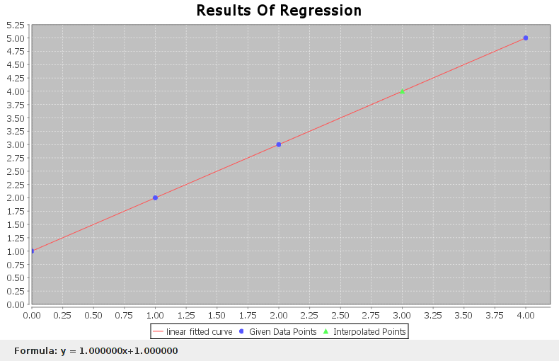
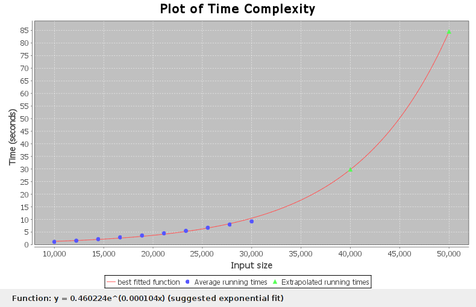

Functerpolate is a set of tools to perform statistical regressions and interpolation on data, and investigate the running time of programs.
There are three interfaces to functerpolate: the main 'functerpolate' script, the 'complexity' script, and using the clojure library directly. In the future, a Java interface may be added.
The Hard Way:Three dependancies are required: The clojure language, the clojure-contrib clojure library, and the OpenChart2 java plotting library. All these jar files must be in your java classpath. From the Functerpolate top level directory, run something like:
java -cp .:/path/to/clojure.jar:/path/to/clojure-contrib.jar/:/path/to/openchart2.jar clojure.main [functerpolate script] [arguments]
The Easy Way:Make sure you have the latest Java version installed. Download the 'kitchen sink' version, and cd into the Functerpolate top level directory. On Linux or Mac (from a terminal), run:
./functerpolate.sh [arguments]On Windows (from the command prompt) run:
./functerpolate.batch [arguments]There are also equivalent script and batch files for the 'complexity' script.
Reads in numbers from standard input. If there are two or more numbers on a line of input, the first two numbers are interpreted as an (x,y) pair and added to the data set. If there is only one number on a line, it is interpreted as an x value for which the equivalent y value should be estimated.
Y values can be estimated in several ways. Either interpolation or regression can be performed. For interpolation, a nth-order polynomial is found that fits the given points exactly, using the method of Lagrange polynomials. For regression, a curve is found that fits the data best in a least-squares sense. Linear, exponential and logarithmic regressions are available.
Either the 'interpolate' option must be given, or a regression must be specified using the 'regression' option.
Example of use
samwise@hex in functerpolate $ clj functerpolate.clj
interpolator -- interpolate and extrapolate values from a dataset
Options
--regression, -r <arg> Use the given regression method to fit a least-squares
line of best fit. Linear, logarithmic, and exponential
regressions are available, as well as 'best' which
will try to choose the best regression.
--interpolate, -i Instead of performing a least-squares regression, fit
a polynomial that passes through all the given points
exactly, using Lagrange interpolation.
--plot, -p Plot the data set, fitted function, and interpolated
points.
--quiet, -q Print out just the interpolated data, nothing else
thanks.
samwise@hex in functerpolate $ clj functerpolate.clj -r linear -p
0 1
1 2
2 3
3
4 5
-- Results of linear regression --
Function: y = 1.000000x+1.000000
Coefficient of detirmination: 1.0
Regression sum of squares: 8.75
Interpolated values:
3.0 4.0

Investigate the time complexity of a given program. To do this, a second program is needed that will generate input for the first, given a number representing the size of the input. Then, the first program is run for a range of input sizes (the input being generated by the second program), and timed. Multiple runs are performed for each input size, and the times averaged, to generate more accurate data.
Example of use
samwise@hex in functerpolate $ clj complexity.clj complexity.clj: attempt to detirmine the time complexity vs input size for a given program. The required arguments are: - an executable program to test - a second program that, given a number as an argument, will generate appropriate input of that size for the first program. Options --start, -sstarting input size [default 100] --limit, -l final input size [default 1000] --points, -p number of data points to collect [default 10] --runs, -r how many times to run the program for each data point [default 10] --plot, -p if given, create a graphical plot of the results --extrapolate, -e a list of bigger input sizes to extrapolate for samwise@hex in functerpolate $ ./genrandom 5 5 420 216 936 994 190 samwise@hex in functerpolate $ ./genrandom 5 | ./isort Enter number of elements Enter elements to be sorted Array before sorting 856 752 257 7 955 Insertion sort Array after sorting 7 257 752 856 955 samwise@hex in functerpolate $ clj complexity.clj --plot --start 10000 --limit 30000 --runs 5 --extrapolate 40000,50000 ./isort ./genrandom The suggested complexity is O(N), or linear-time. Input size Average runtime over 5 runs 10000 1.083128s 12222 1.590186s 14444 2.201796s 16666 2.864993s 18888 3.702366s 21111 4.638832s 23333 5.597922s 25555 6.568676s 27777 7.735341s 30000 8.961043s Input size Predicted runtime 40000 12.397597s 50000 16.349103s
The internal functerpolate clojure libraries can be used if the functerpolate top-level directory is in the classpath. There are four: interpolate, regression, complexity, and plot. Here are listings of the avaliable functions. For further information, read the docstrings for each function.
functerpolate.interpolate: function 'lagrange-interpolation-fn'
functerpolate.regression: function 'linear-regression', struct 'regression-fit', multi function 'fit-model' with methods for models ':Linear',':Exponential', ':Logarithmic', and ':Best'.
functerpolate.complexity: multi function 'runtime', with methods for clojure functions and external programs, struct 'complexity-analysis', function 'complexity'
functerpolate.plot: struct 'plot', function 'function-plot-series', macro 'with-new-plot, macro 'with-plot'. Functions available to use with the plot macros: 'add-data', 'add-function', 'add-label', 'add-caption', 'make-honest', 'make-visible', 'update', 'exit-on-close'.